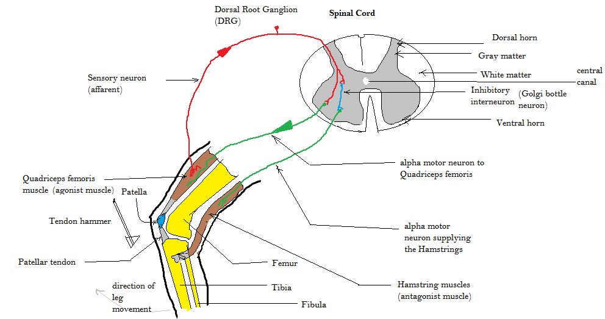

Stretch reflex (knee-jerk)
A tap stretches the quadriceps; muscle spindles fire, one synapse in the spinal cord, and the muscle contracts about 30 ms later. The same loop keeps posture up against every small push, all day, without a thought. Lesson: a one-hop loop with the right sensor beats a smart loop that is late.
Image: Amiya Sarkar, Wikimedia Commons, CC BY-SA 4.0.